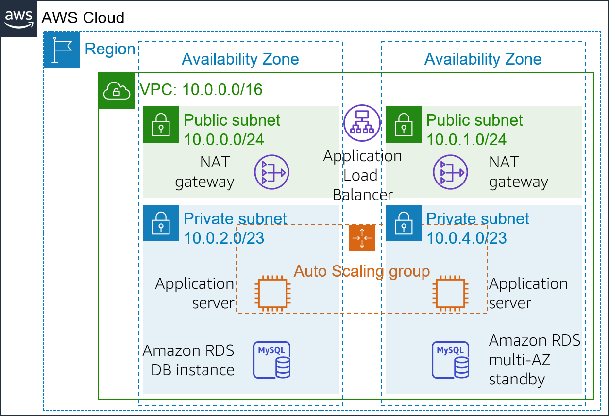
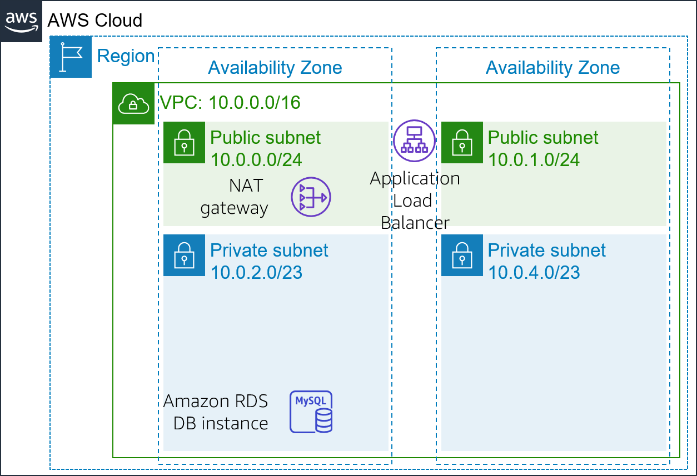
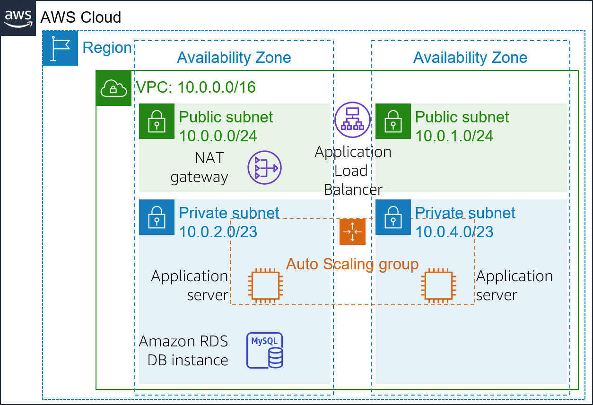
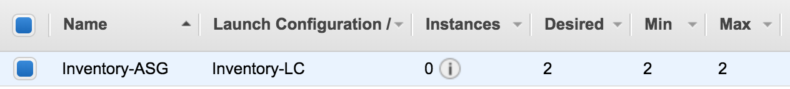
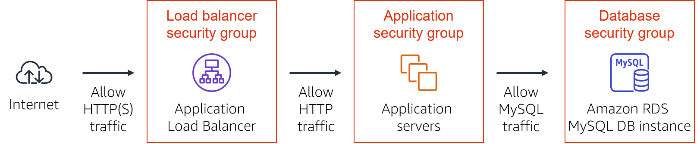
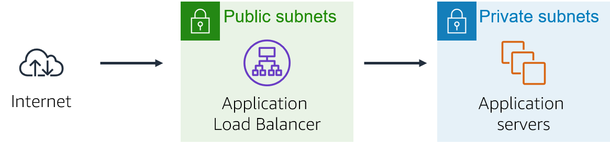
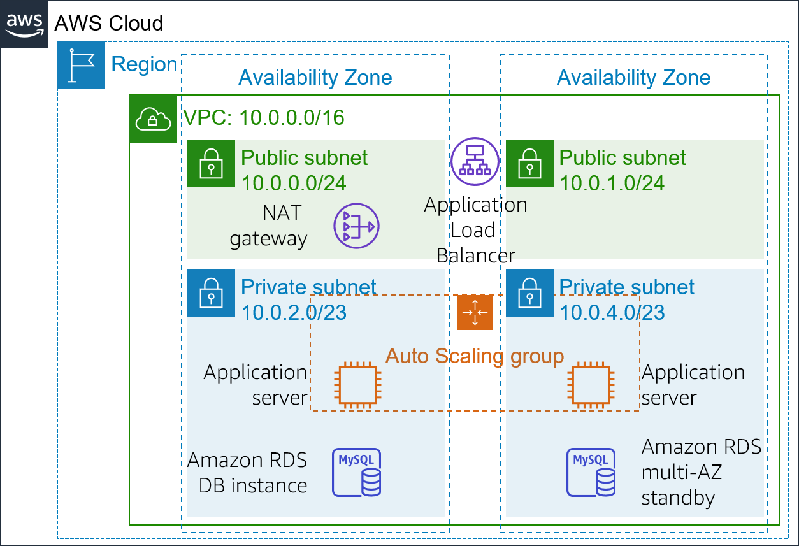

Critical business systems should be deployed as highly available applications—that is, applications remain operational even when some components fail. To achieve high availability in Amazon Web Services (AWS), we recommend that you run services across multiple Availability Zones.
Many AWS services are inherently highly available, such as load balancers. Many AWS services can also be configured for high availability, such as deploying Amazon Elastic Compute Cloud (Amazon EC2) instances in multiple Availability Zones.
In this lab, you will start with an application that runs on a single EC2 instance. You will then make the application highly available.
After completing this lab, you should be able to:
At the end of this lab, your architecture will look like the following example:

The lab requires approximately 40 minutes to complete.
In this lab environment, access to AWS services and service actions might be restricted to the ones that are needed to complete the lab instructions. You might encounter errors if you attempt to access other services or perform actions beyond the ones that are described in this lab.
At the top of these instructions, choose Start Lab to launch your lab.
A Start Lab panel opens, and it displays the lab status.
Tip: If you need more time to complete the lab, restart the timer for the environment by choosing the Start Lab button again.
At the top of these instructions, choose AWS.
This action opens the AWS Management Console in a new browser tab. The system automatically logs you in.
Tip: If a new browser tab does not open, a banner or icon is usually at the top of your browser with the message that your browser is preventing the site from opening pop-up windows. Choose the banner or icon, and then choose Allow pop-ups.
Arrange the AWS Management Console tab so that it displays alongside these instructions. Ideally, you will have both browser tabs open at the same time so that you can follow the lab steps more easily.
Do not change the Region unless specifically instructed to do so.
This lab begins with an environment that is already deployed via AWS CloudFormation. It includes:
In this task, you will review the configuration of the VPC that was created for this lab.
In the left navigation pane, under Filter by VPC, choose the Select a VPC box and select Lab VPC.
This setting will limit the console to only show resources that are associated with the Lab VPC.
In the left navigation pane, choose Your VPCs.
Here, you can access information about the Lab VPC that was created for you.
The IPv4 CIDR column has a value of 10.0.0.0/16, which means that this VPC includes all IP addresses that start with 10.0.x.x.
In the left navigation pane, choose Subnets.
Here, you can access information about Public Subnet 1:
To reveal more details at the bottom of the page, select Public Subnet 1.
Tip: To adjust the size of the lower window pane, you can drag the divider.
In the lower half of the page, choose the Route table tab.
This tab includes details about the routing for this subnet:
Choose the Network ACL tab.
This tab has information about the network access control list (network ACL) that is associated with the subnet. The rules currently permit all traffic to flow in and out of the subnet, but the rules can be further restricted by using security groups.
In the left navigation pane, choose Internet Gateways.
Notice that an internet gateway is already associated with Lab VPC.
Select Inventory-DB.
This security group controls incoming traffic to the database.
In the lower half of the page, choose the Inbound rules tab.
These rules permit inbound MySQL or Aurora traffic (port 3306) from anywhere in the VPC (10.0.0.0/16). You will later modify this setting so it only accepts traffic from the application servers.
Choose the Outbound rules tab.
By default, security groups allow all outbound traffic. However, this setting can be modified as needed.
To build a highly available application, it is a best practice to launch resources in multiple Availability Zones. Availability Zones are physically separate data centers (or groups of data centers) in the same Region. If you run your applications across multiple Availability Zones, you can provide greater availability if a data center experiences a failure.
Because the application runs on multiple application servers, you will need a way to distribute traffic amongst those servers. You can accomplish this goal by using a load balancer. This load balancer will also perform health checks on instances and only send requests to healthy instances.

Choose Create Load Balancer
Several types of load balancers are displayed. Read the descriptions of each type to understand their capabilities.
Inventory-LB
Scroll down to the Network mapping section, then for VPC, select Lab VPC.
Important: Be sure to choose Lab VPC. It is likely not the default selection.
You will now specify which subnets the load balancer should use. It will be a public load balancer, so you will select both public subnets.
Choose the second Availability Zone, then choose the Public Subnet that displays.
You should now have selected two subnets: Public Subnet 1 and Public Subnet 2. (If not, go back and try the configuration again.)
In the Security groups section, select Create new security group, then configure:
Inventory-LBEnable web access to load balancer
Under Inbound rules, choose Add rule and configure as described:
Still under Inbound rules, choose Add rule again and configure:
Assign the security group to the load balancer:
In the Listeners and routing section, choose Create target group.
Analysis: Target groups define where to send traffic that comes into the load balancer. The Application Load Balancer can send traffic to multiple target groups based upon the URL of the incoming request, such as having requests from mobile apps going to a different set of servers. Your web application will use only one target group.
A new browser tab will open. Configure the target group as described here:
Choose a target type: Instances
Target group name: Inventory-App
VPC: Ensure that Lab VPC is chosen.
Scroll down and expand Advanced health check settings.
Note: The Application Load Balancer automatically performs health checks on all instances to ensure that they are responding to requests. The default settings are recommended, but you will make them slightly faster for use in this lab.
Healthy threshold: 2
Interval: 10 (seconds)
This means that the health check will be performed every 10 seconds, and if the instance responds correctly twice in a row, it will be considered healthy.
Choose Next. The Register targets screen appears.
Note: Targets are the individual instances that will respond to requests from the load balancer.
You do not have any web application instances yet, so you can skip this step.
Review the settings and choose Create target group.
Scroll to the bottom of the page, and choose Create load balancer.
Amazon EC2 Auto Scaling is a service designed to launch or terminate Amazon EC2 instances automatically based on user-defined policies, schedules, and health checks. It also automatically distributes instances across multiple Availability Zones to make applications highly available.
In this task, you will create an Auto Scaling group that deploys EC2 instances across your private subnets, which is a security best practice for application deployment. Instances in a private subnet cannot be accessed from the internet. Instead, users send requests to the load balancer, which forwards the requests to EC2 instances in the private subnets.

You will create an Amazon Machine Image (AMI) from the existing Web Server 1. This will save the contents of the boot disk so that new instances can be launched with identical content.
In the left navigation pane, choose Instances.
First, you will confirm that the instance created for you in this lab is running.
Wait until the Status check for Web Server 1 displays 2/2 checks passed. Choose refresh to update.
You will now create an AMI based upon this instance.
In the Actions menu, choose Image and templates > Create image, then configure:
Web Server AMILab AMI for Web Server
Choose Create image
A banner at the top of the screen displays the AMI ID for your new AMI.
You will use this AMI when launching the Auto Scaling group later in the lab.
You will first create a launch configuration, which defines the type of instances that Amazon EC2 Auto Scaling should launch. The interface looks similar to when you launch an EC2 instance. However, instead of launching an instance, it stores the configuration for later use.
Configure these settings:
Launch configuration name: Inventory-LC
Amazon machine image (AMI): Web Server AMI
Instance type:
Note: If you have launched the lab in the us-east-1 Region, select the t2.micro instance type. To find the Region, look in the upper-right corner of the Amazon EC2 console.
Note: If you receive the error message Something went wrong. Please refresh and try again, you may ignore it and continue with the exercise.
Additional configuration:
Monitoring: Select Enable EC2 instance detailed monitoring within CloudWatch
This allows Auto Scaling to react quickly to changing utilization.
x
# Install Apache Web Server and PHPyum install -y httpd mysqlamazon-linux-extras install -y php7.2# Download Lab fileswget https://aws-tc-largeobjects.s3-us-west-2.amazonaws.com/ILT-TF-200-ACACAD-20-EN/mod9-guided/scripts/inventory-app.zipunzip inventory-app.zip -d /var/www/html/# Download and install the AWS SDK for PHPwget https://github.com/aws/aws-sdk-php/releases/download/3.62.3/aws.zipunzip aws -d /var/www/html# Turn on web serverchkconfig httpd onservice httpd startYou will receive a warning that You will not able to connect to the instance. You can ignore this warning because you will not need connect to the instance. All configuration is done via the user data script.
Under Key pair (login):
Choose Create launch configuration
The launch configuration defined what to launch, but the Auto Scaling group defines where to launch the resources.
Inventory-ASG (ASG stands for Auto Scaling group)
On the Network page, configure as described below:
VPC: Lab VPC
Subnet: Select Private Subnet 1 and Private Subnet 2
This will launch EC2 instances in private subnets across both Availability Zones.
Under Load balancing, configure:
Select Attach to an existing load balancing
Existing load balancer target groups: Select Inventory-App
These settings tell the Auto Scaling group to register new EC2 instances as part of the Inventory-App target group that you created earlier. The load balancer will send traffic to instances that are in this target group.
Under Health checks, configure:
90
Under Group size, configure:
Under Scaling policies, choose None.
For this lab, you will maintain two instances at all times to ensure high availability. If the application is expected to receive varying loads of traffic, you can also create scaling policies that define when to launch or terminate instances. However, you do not need to create scaling policies for the Inventory application in this lab.
On the Add tags page, choose Add tag and configure:
NameInventory-AppThese settings will tag the Auto Scaling group with a Name, which will also appear on the EC2 instances that are launched by the Auto Scaling group. You can use tags to identify which Amazon EC2 instances are associated with which application. You could also add tags such as Cost Center to assign application costs in the billing files.
On the Review page, choose Create Auto Scaling group
The Inventory-ASG will appear in the console:

The review shows that:
The group currently has no instances, but the Status column indicates Updating capacity.
The Desired quantity is 2 instances. Amazon EC2 Auto Scaling will attempt to launch two instances to reach the desired quantity.
The Min and Max are also set to 2 instances. Amazon EC2 Auto Scaling will try to always provide two instances, even if failure occurs.
Your application will soon run across two Availability Zones. Amazon EC2 Auto Scaling will maintain that configuration even if an instance or Availability Zone fails.
After a minute, choose the refresh icon to update the display. It should show that 2 instances are running.
The application you deployed is a three-tier architecture. You will now configure the security groups to enforce these tiers:

You already configured the load balancer security group when you created the load balancer. It accepts all incoming HTTP and HTTPS traffic.
The load balancer has been configured to forward incoming requests to a target group. When Auto Scaling launches new instances, it will automatically add those instances to the target group.
The application security group was provided as part of the lab setup. You will now configure it to only accept incoming traffic from the load balancer.
The security group is currently empty. You will now add a rule to accept incoming HTTP traffic from the load balancer. You do not need to configure HTTPS traffic because the load balancer was configured to forward HTTPS requests via HTTP. This practice offloads security to the load balancer, reducing the amount of work that is required by the individual application servers.
Type: HTTP
Source:
sgDescription: Traffic from load balancer
Choose Save rules
The application servers can now receive traffic from the load balancer. This includes health checks that the load balancer performs automatically.
You will now configure the database security group to only accept incoming traffic from the application servers.
In the Security groups list, choose Inventory-DB (and make sure that no other security groups are selected).
The existing rule permits traffic on port 3306 (used by MySQL) from any IP address within the VPC. This is a good rule, but security can be restricted further.
In the Inbound rules tab, choose Edit inbound rules and configure these settings:
sgTraffic from application serversYou have now configured three-tier security. Each element in the tier only accepts traffic from the tier above.
In addition, the use of private subnets means that you have two security barriers between the internet and your application resources. This architecture follows the best practice of applying multiple layers of security.
Your application is now ready for testing.
In this task, you will confirm that your web application is running. You will also test that it is highly available.
In the left navigation pane, choose Target Groups.
The Inventory-App group of instances will be displayed.
Select Inventory-app.
In the lower half of the page, choose the Targets tab.
This tab should show two registered targets. The Status column shows the results of the load balancer health check that is performed against the instances.
In the Registered targets area, occasionally choose the refresh icon until the Status for both instances appears as healthy.
If the status does not eventually change to healthy, ask your educator for help with diagnosing the configuration.
You will test the application by connecting to the load balancer, which will then send your request to one of the EC2 instances. You will first need to retrieve the Domain Name System (DNS) name of the load balancer.
In the Description tab in the lower half of the window, copy the DNS name to your clipboard.
It should be similar to: inventory-LB-xxxx.elb.amazonaws.com
Open a new web browser tab, paste the DNS name from your clipboard and press ENTER.
The load balancer forwarded your request to one of the EC2 instances. The instance ID and Availability Zone are shown at the bottom of the webpage.
Reload the page in your web browser. You should notice that the instance ID and Availability Zone sometimes change between the two instances.
When this web application displays, the flow of information is:

Your application was configured to be highly available. You can prove the application's high availability by terminating one of the EC2 instances.
In the left navigation pane, choose Instances.
You will now terminate one of the web application instances to simulate a failure.
Choose Terminate.
In a short time, the load balancer health checks will notice that the instance is not responding. The load balancer will automatically route all requests to the remaining instance.
Return to the web application tab in your web browser and reload the page several times.
You should notice that the Availability Zone that is shown at the bottom of the page stays the same. Though an instance failed, your application remains available.
After a few minutes, Amazon EC2 Auto Scaling will also notice the instance failure. It was configured to keep two instances running, so Amazon EC2 Auto Scaling will automatically launch a replacement instance.
Return to the Amazon EC2 console tab where you have the instances list displayed. In the top-right area, choose the refresh icon every 30 seconds or so until a new EC2 instance appears.
After a few minutes, the health check for the new instance should become healthy. The load balancer will resume sending traffic between the two Availability Zones. You can reload your web application tab to see this happen.
This task demonstrates that your application is now highly available.
This task is optional. You can work on this task if you have remaining lab time.
The application architecture is now highly available. However, the Amazon RDS database operates from only one database instance.
In this optional task, you will make the database highly available by configuring it to run across multiple Availability Zones (that is, in a Multi-AZ deployment).

Choose the link for the name of the inventory-db instance.
Feel free to explore the information about the database.
Scroll down to the Availability & durability section. For Multi-AZ deployment, select Create a standby instance.
Analysis: You only need to reconfigure this one setting to convert the database to run across multiple data centers (Availability Zones).
This option does not mean that the database is distributed across multiple instances. Instead, one instance is the primary instance, which handles all requests. Another instance will be launched as the standby instance, which takes over if the primary instance fails. Your application continues to use the same DNS name for the database. However, the connections will automatically redirect to the currently active database server.
You can scale an EC2 instance by changing attributes, and you can also scale an RDS database this way. You will now scale up the database.
Scroll back up and for DB instance class, select db.t3.small.
This action doubles the size of the instance.
For Allocated storage, enter: 10
This action doubles the amount of space that is allocated to the database.
Feel free to explore the other options on the page, but do not change any other settings.
At the bottom of the page, choose Continue
Database performance will be impacted by these changes. Therefore, these changes can be scheduled during a defined maintenance window, or they can be run immediately.
Choose Modify DB instance
The database enters a modifying state while it applies the changes. You do not need to wait for it to complete.
This task is optional. You can work on this task if you have remaining lab time.
The application servers run in a private subnet. If the servers must access the internet (for example, to download data), the requests must be redirected through a Network Address Translation (NAT) gateway. (The NAT gateway must be located in a public subnet).
The current architecture has only one NAT gateway in Public Subnet 1. Thus, if Availability Zone 1 fails, the application servers will not be able to communicate with the internet.
In this optional task, you will make the NAT gateway highly available by launching another NAT gateway in the other Availability Zone. The resulting architecture will be highly available:
In the left navigation pane, choose NAT Gateways.
The existing NAT gateway displays. You will now create a NAT gateway for the other Availability Zone.
Choose Create NAT gateway and configure these settings:
Subnet: Public Subnet 2
Choose Allocate Elastic IP
Choose Create NAT gateway
You will now create a new route table for Private Subnet 2. This route table will redirect traffic to the new NAT gateway.
In the left navigation pane, choose Route Tables.
Choose Create route table and configure these settings:
Private Route Table 2
Observe the settings in the Routes tab.
Currently, one route directs all traffic locally. You will now add a route to send internet-bound traffic through the new NAT gateway.
Choose Edit routes and then configure these settings:
Choose Add route
Destination: 0.0.0.0/0
Target: Select NAT Gateway, then select the nat- entry that is not the entry for NATGateway1 (which is under the Details button above these instructions)
Choose Save changes
The NAT gateway that is listed under the Details button (which is above these instructions) is for Public Subnet 1. You are configuring this route table to use the other NAT gateway.
Choose Save associations
This action now sends internet-bound traffic from Private Subnet 2 to the NAT gateway that is in the same Availability Zone.
Your NAT gateways are now highly available. A failure in one Availability Zone will not impact traffic in the other Availability Zone.
If the results don't display after a couple of minutes, return to the top of these instructions and choose Grades
Tip: You can submit your work multiple times. After you change your work, choose Submit again. Your last submission is what will be recorded for this lab.
Congratulations! You have completed the lab.
Choose End Lab at the top of this page, and then select Yes to confirm that you want to end the lab.
A panel indicates that DELETE has been initiated... You may close this message box now.
©2021 Amazon Web Services, Inc. and its affiliates. All rights reserved. This work may not be reproduced or redistributed, in whole or in part, without prior written permission from Amazon Web Services, Inc. Commercial copying, lending, or selling is prohibited.